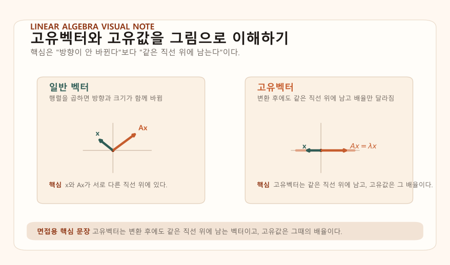
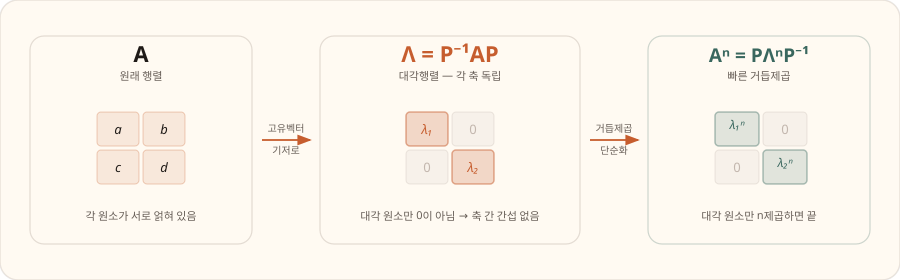
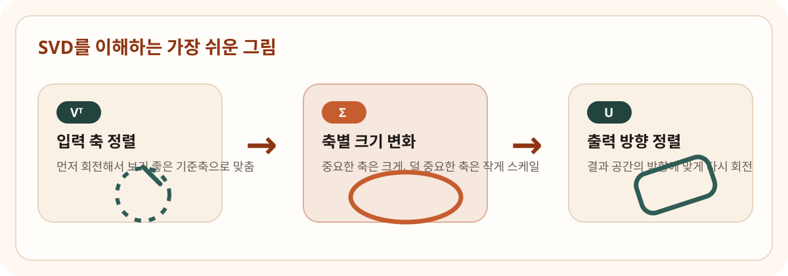
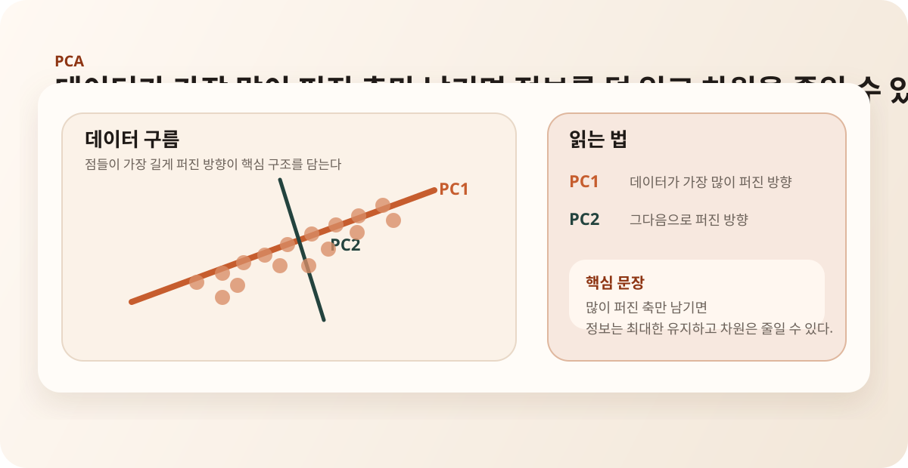
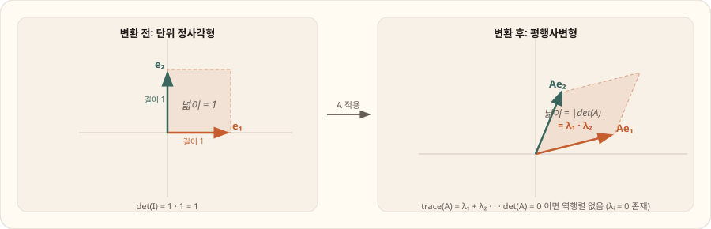
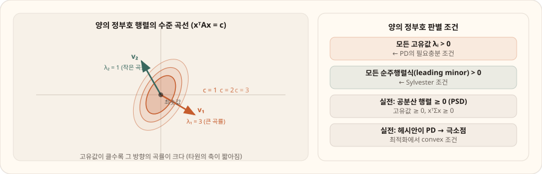
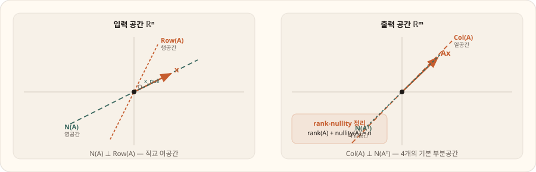
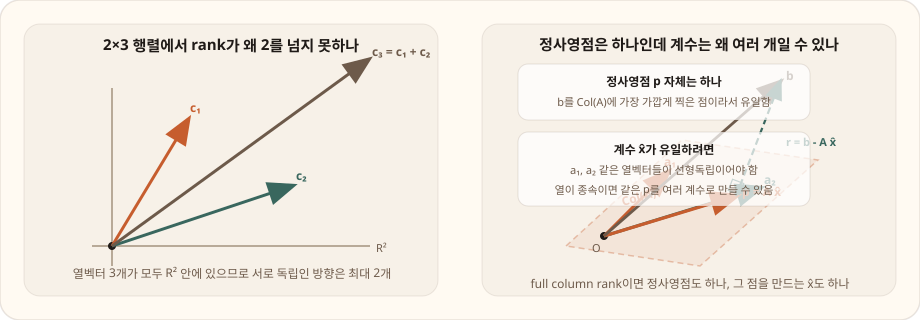
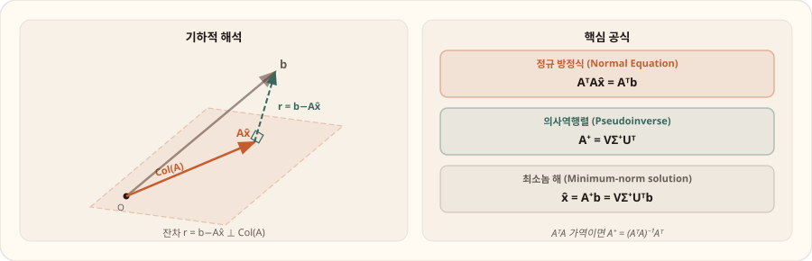

Core
고유값과 대각화
고유값과 고유벡터의 정의, 대각화 조건, 왜 중요한지
Chapters
Eigen Concepts
행렬이 벡터에 작용하면 보통은 방향과 크기가 함께 바뀝니다. 그런데 어떤 특별한 벡터는 변환을 거친 뒤에도 원래와 같은 직선 위에 남습니다. 이 벡터가 고유벡터이고, 그때 얼마나 늘어나거나 줄어드는지를 나타내는 스칼라가 고유값입니다.

여기서 가장 중요한 것은 "방향이 안 바뀐다"는 표현보다 "같은 직선 위에 남는다"는 표현이 정확하다는 점입니다. 고유값이 음수이면 반대 방향으로 뒤집혀도 여전히 같은 span 안에 있기 때문입니다.
고유벡터는 유지되는 축이고, 고유값은 그 축 방향의 배율입니다.
Diagonalization
대각화는 행렬을 고유벡터 기준으로 다시 보는 과정입니다. 원래 좌표계에서는 복잡해 보이는 변환도, 적절한 고유벡터 기저에서는 각 축이 서로 간섭하지 않고 독립적으로 스케일만 바뀌는 모습으로 보입니다.

여기서 꼭 고쳐야 하는 문장은 "대각화 가능 조건은 rank가 아니라 선형독립인 고유벡터가 n개 존재하는 것"입니다. 고유값이 모두 서로 다르면 자동으로 만족되고, 중복 고유값이 있으면 대수적 중복도와 기하적 중복도를 따져야 합니다.
대각화가 중요한 이유는 계산과 해석이 동시에 쉬워지기 때문입니다. 행렬의 거듭제곱, 반복 변환, 선형 동적 시스템의 장기 거동을 고유값만 보고 빠르게 파악할 수 있어 강화학습, 제어, 최적화로 자연스럽게 이어집니다.
SVD And PCA
SVD는 모든 행렬을 회전, 스케일, 회전의 세 단계로 이해하게 해주는 분해입니다. 직사각 행렬을 포함한 모든 행렬에 적용 가능하다는 점에서, 대각화보다 훨씬 실전적입니다.

여기서 자주 꼬이는 부분은 특이값 정의입니다. 특이값은 AᵀA의 고유값에 제곱근을 취한 값입니다. 즉 "특이값이 고유값의 제곱"이라는 문장은 틀립니다.
PCA는 데이터가 가장 많이 퍼진 방향을 찾는 차원 축소 방법입니다. 공분산 행렬의 고유벡터가 주성분 방향이고, 고유값은 각 방향의 분산량을 뜻합니다. 실전에서는 중심화된 데이터 행렬에 SVD를 적용해도 같은 구조를 읽어낼 수 있습니다.

Comparison Questions
EVD vs SVD
Diagonalization
A = PΛP⁻¹.A = QΛQᵀ.PCA Two Views
Determinant & Trace
행렬식은 선형변환이 공간의 부피를 얼마나 바꾸는지를 나타내며, det(A) = λ₁ · λ₂ · · · λₙ으로 모든 고유값의 곱입니다. 트레이스는 trace(A) = λ₁ + λ₂ + · · · λₙ으로 모든 고유값의 합입니다.

det는 전체 부피 배율이고, trace는 축별 스케일의 합입니다. 둘 다 고유값 언어로 해석됩니다.
Positive Definite
영벡터가 아닌 모든 벡터 x에 대해 xᵀAx > 0이면 양의 정부호(PD)입니다. 대칭행렬에서는 모든 고유값이 양수인 것과 동치입니다. 0 이상이면 양의 반정부호(PSD)라고 합니다.

이 개념이 중요한 이유는 두 갈래입니다. 첫째, 공분산 행렬은 항상 PSD라서 PCA와 다변량 정규분포에 직접 연결됩니다. 둘째, 최적화에서 헤시안이 PD이면 그 점이 극소라는 해석으로 이어집니다.
Conditions & Counterexamples
Real Symmetric Matrix
그렇습니다. 실수 대칭행렬은 고유값이 모두 실수이고, 서로 직교하는 고유벡터 기저를 가져 직교대각화가 가능합니다.
General Real Matrix
아닙니다. 예를 들어 2차원 회전행렬은 실수행렬이지만 복소 고유값을 가질 수 있습니다.
Full Rank
아닙니다. 예를 들어 [[1, 1], [0, 1]]은 full rank이고 역행렬도 있지만 고유벡터가 하나뿐이라 대각화되지 않습니다.
Least Squares
A가 full column rank이면 AᵀA가 PD가 되어 최소제곱해가 유일합니다.
AᵀA
항상 대칭이고 PSD입니다. A가 full column rank이면 PD까지 올라갑니다.
PSD vs PD
PSD는 xᵀAx ≥ 0, PD는 xᵀAx > 0입니다. 즉 PSD는 0 고유값을 허용하고, PD는 허용하지 않습니다.
Rank & Null Space
Rank는 변환 후 살아남은 독립적인 방향의 수이고,
Null space는 변환 후 0이 되어버리는 벡터들의 집합입니다.
행렬 A가 m×n일 때, rank(A) + nullity(A) = n이 항상 성립합니다.

rank는 열공간의 차원, 즉 서로 선형독립인 열의 개수입니다.
2×3 행렬은 열벡터가 3개지만 모두 R² 안에 있으므로 독립적인 방향은 최대 2개뿐입니다.
그래서 2×3 행렬은 rank가 최대 2이고, 실제로 rank가 2인 경우가 많습니다.
예를 들어 A = [[1, 0, 1], [0, 1, 1]]이면 세 번째 열은 첫째 열과 둘째 열의 합이라
새 방향을 추가하지 못합니다. 그래서 열은 3개여도 rank는 2입니다.

Least Squares & Pseudoinverse
실제 데이터 문제에서 Ax = b는 정확히 맞아떨어지지 않는 경우가 많습니다. 이때 ‖Ax − b‖²을 최소화하는 x를 찾는 문제가 최소제곱입니다.
기하학적으로는 b를 Col(A)에 직교 투영한 결과가 Ax̂이고, 잔차 r = b − Ax̂는 Col(A)에 수직입니다. 이 조건이 정규 방정식 AᵀAx̂ = Aᵀb로 이어집니다.

정사영점 Ax̂는 하나지만, 그 점을 만드는 계수 x̂는 열들이 선형독립일 때만 유일합니다. 열들이 종속이면 같은 점을 여러 계수 조합으로 만들 수 있어서, 정사영점은 같아도 x̂는 여러 개가 될 수 있습니다.
Probability & Statistics Bridge
Covariance Matrix
임의의 벡터 v에 대해 vᵀΣv = E[(vᵀ(X−μ))²]이므로 항상 0 이상입니다.
PCA
PCA는 가장 많이 퍼진 방향을 찾는 방법이면서, 동시에 그 축만 남겼을 때 재구성 오차를 최소화하는 low-rank approximation으로도 해석할 수 있습니다.
Least Squares
오차가 iid Gaussian이라고 가정하면 음의 로그우도를 최소화하는 문제가 결국 squared error 최소화와 같아집니다.
Independence
독립이면 비상관이지만, 비상관이라고 항상 독립인 것은 아닙니다. 다만 Gaussian 분포에서는 두 개념이 일치합니다.
Follow-up Notes
"방향이 안 바뀐다"보다 "같은 직선 위에 남는다"가 더 정확합니다. "실수행렬이면 고유값이 실수"가 아니라 "실수 대칭행렬이면 고유값이 실수"라고 조건을 붙여야 합니다.
비교형 질문에서는 대상 행렬, 존재 조건, 해석, 실전 장점 네 축을 먼저 잡으면 답변이 안정됩니다.
Mistakes
고유벡터는 벡터, 고유값은 스칼라입니다. 한 문장 안에서 역할을 뒤바꾸지 않도록 주의합니다.
대각화는 선형독립인 고유벡터 개수 문제이고, rank는 독립적인 열 또는 행의 개수 문제입니다.
정확한 표현은 AᵀA 고유값의 제곱근입니다. 이 실수는 바로 눈에 띄는 감점 포인트입니다.
고유값이 항상 실수라는 결론은 대칭 조건이 붙어야 안전합니다.
일반적으로는 다르고, Gaussian에서만 일치합니다. 확통 꼬리질문에서 자주 나옵니다.
대칭이고 PSD라는 말을 먼저 하고, 필요하면 vᵀΣv = E[(vᵀ(X−μ))²] ≥ 0으로 설명합니다.